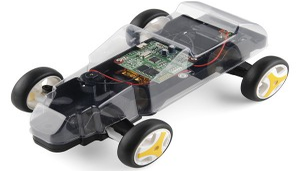

Autodesk
(May'17 - Jul'17)Augmented-Reality in shop floor management
(Guided by Yatendra Singh, Nilesh Kuber)- Research in implementation of Augmented-Reality features in daily Shop-floor management
- Contributed in application for implementing Virtual-buttons, Tool-path generation on detecting Image-target using Vuforia library
- Translation of a 3-D tool model over the path generated
To view the sample video play the video on right
Dirt-Bike using Box-2D
(Sep'15 - Nov'15)(Guided by Prof. Sharat Chandran)
2-dimensional game of dirt-bike passing through a series of obstacles
The bike can be controlled using arrow keys
To view the sample video of the game play video on right and for code click here
Auto-Reply Webapp
(May'16 - Jul'16)(Internship at Techmahindra. Guided by Yugal Mullick)
Virtual chatbox for answering FAQs for AirIndia
Includes web-crawling feature to display fares
To view the sample video play the video on right and for code click here
Speech to Speech Translation
(May'16 - Jul'16)(Internship at Techmahindra. Guided by Yugal Mullick)
Offline translation of speech from English to Hindi
Use of Sphinx for speech-recognition, moses for text translation and festival for reading text
To view the sample video play the video on right and for code click here
Web-scrapping
(Nov'15 - Dec'15)(Internship at Darwin Inc.)
Scrapping of data from other travel websites using selenium with java
Use of spring framework for the webapp
Wifi controlled RC car
(May'15 - Jun'15)Made a wifi controlled RC car named Third-eye using a Raspberry Pi under Institute Technical Summer Project (ITSP) body.
The car can be controlled from web-browser from any device connected over the local wifi network and gives live video-streaming
Its documentation can be seen here and for code click here

Branch Change Application
(Oct'15 - Nov'15)(Guided by Prof. Sharat Chandran)
Built a webapp using Django-framework for branch change in IITB
Provides online interface for selecting choices for many students and then displays the final allotment after applying many constraints
Client-Server Chat Application
(Oct'15)(Guided by Prof. Sharat Chandran)
Made a chat application using java which enabled chatting between two PCs using console
One of the PCs acts as the server and they are connected using IP address
Instagram Photo Downloader
(Oct'15)Made a non-academic software which downloads all the photos of instagram user after searching for the best choice
Code can be found here
Banking Application
(Oct'14 - Nov'14)(Guided by Prof. Supratik Chakraborty and Prof. Deepak B Phatak)
Developed a c++ based application for maintaining data by a banking assistant
Graphical user interface with buttons using simplecpp package
Further description and code can be seen here
Management
(Aug'15 - Sep'15)(Guided by Prof. Arti Kalro)
Presentation on the distribution network and strategy of HUL (Hindustan Unilever Limited) company
Research on history, strategy and growth plan of Unilever in India